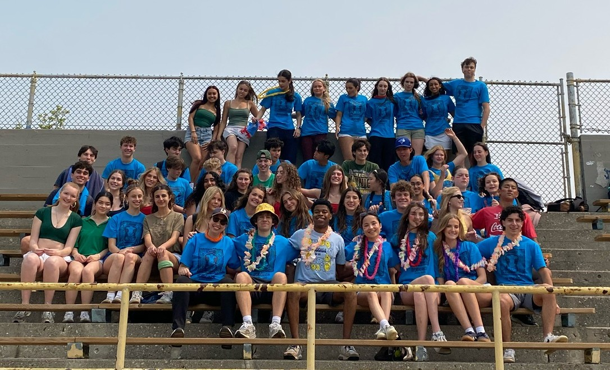
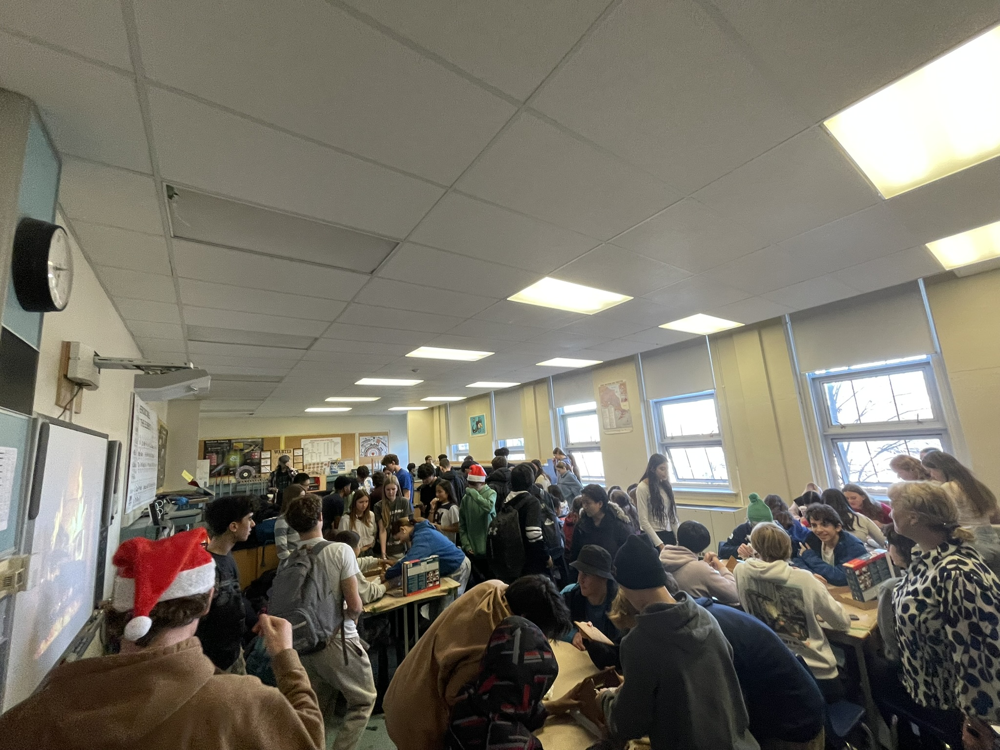
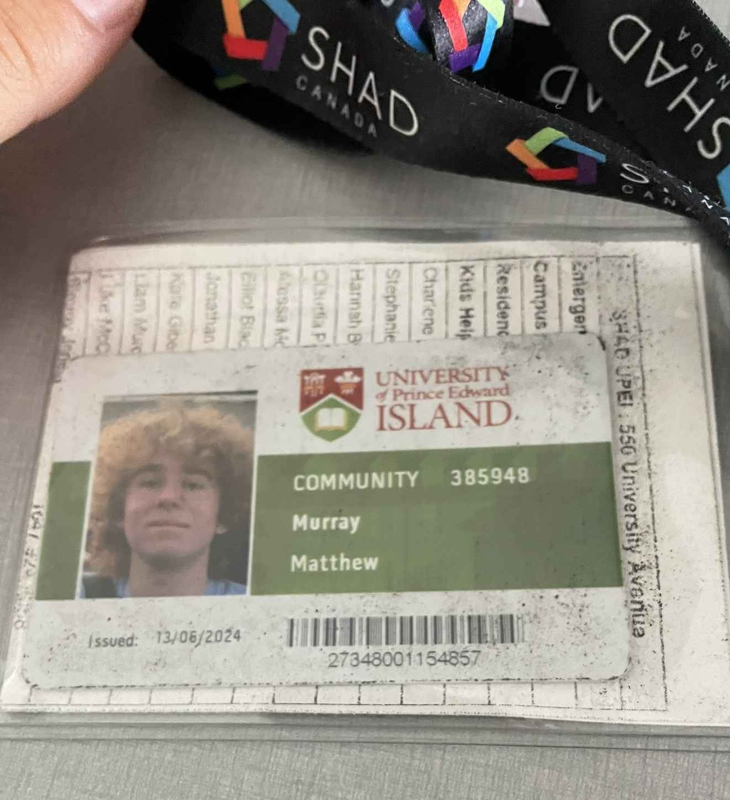
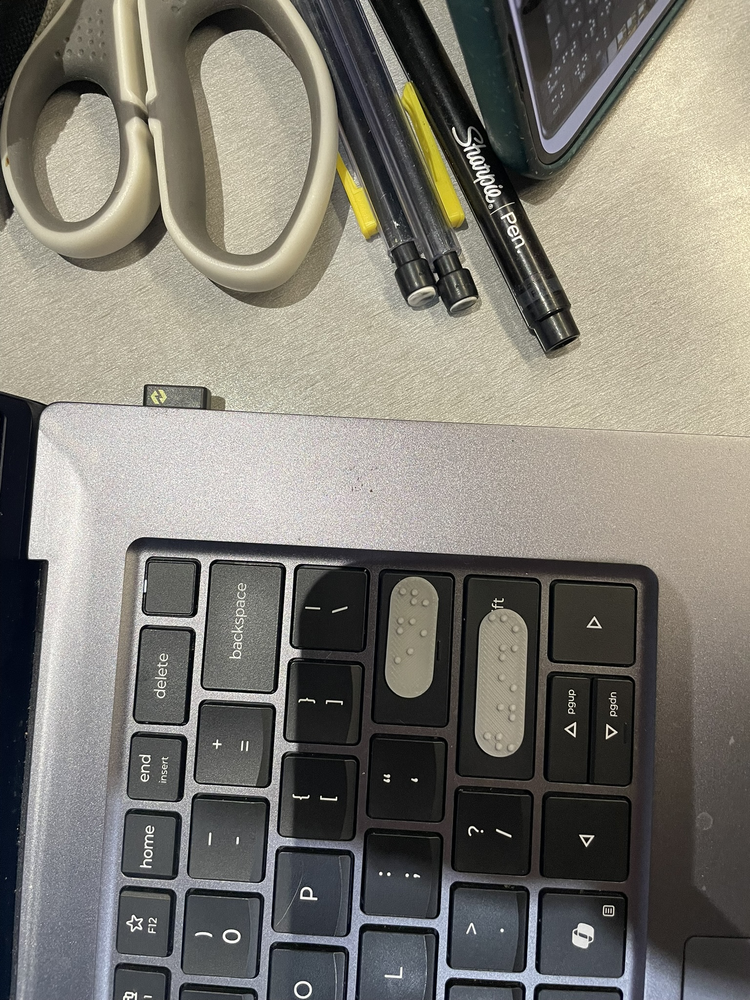
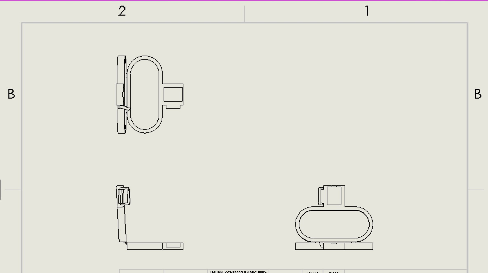
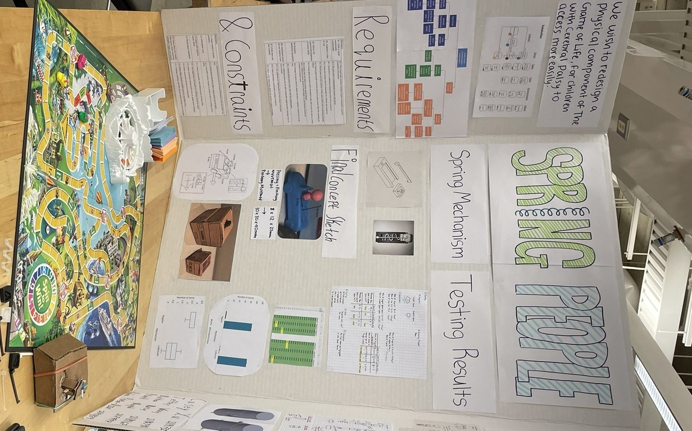
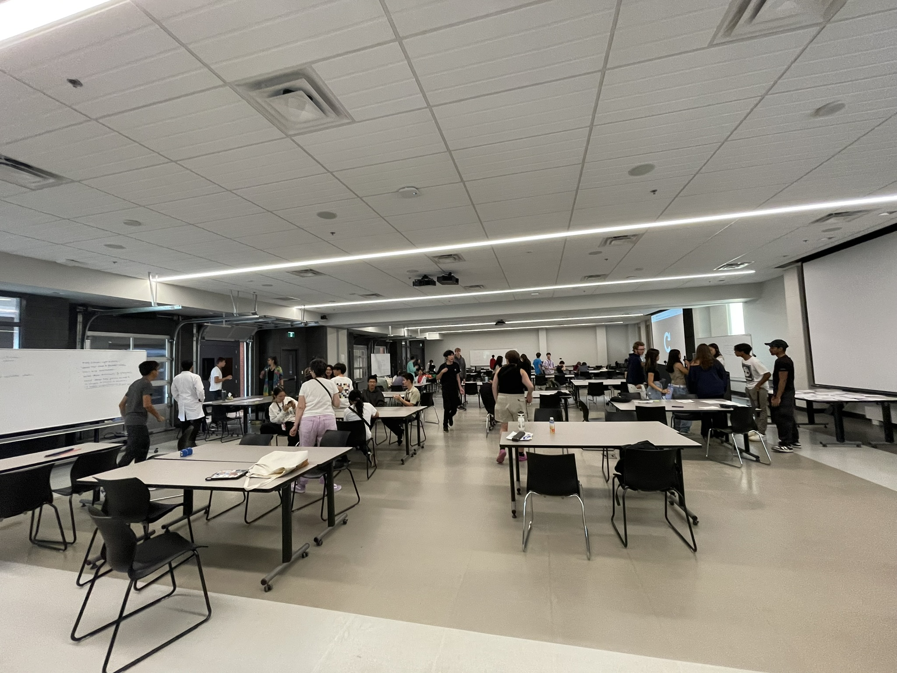
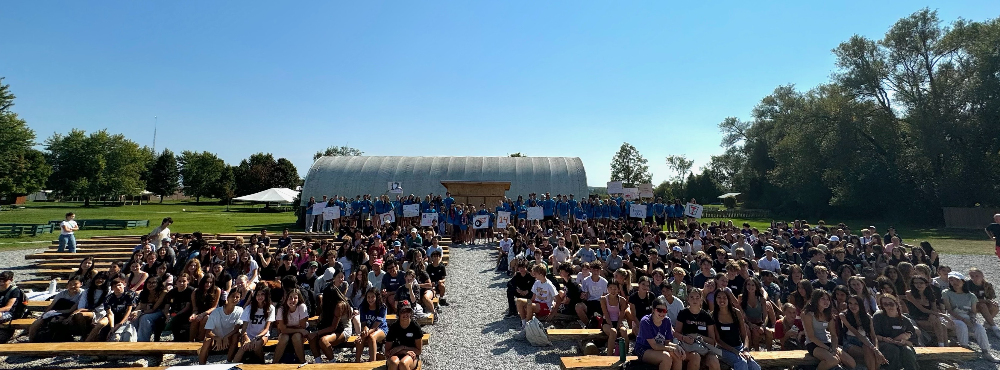
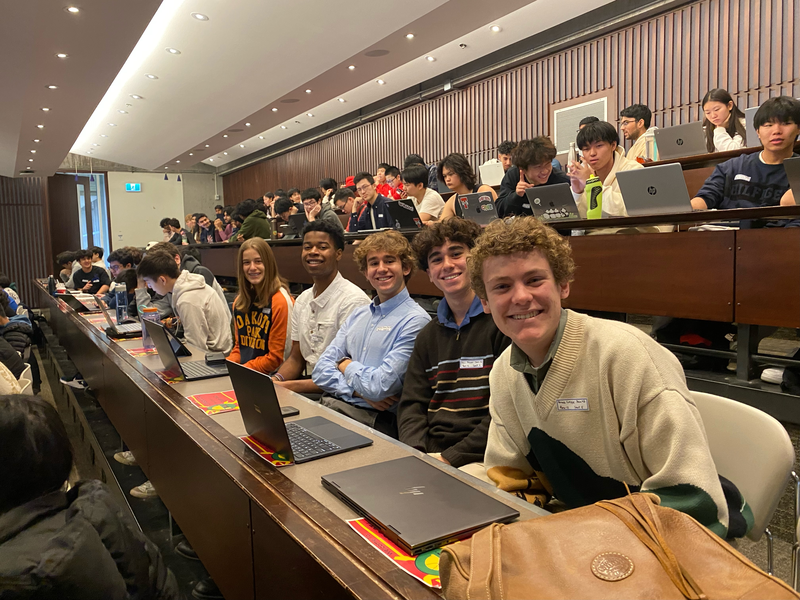

Biomedical Engineering · University of Waterloo · First Year Génie biomédical · Université de Waterloo · Première année
Student of Engineering. Leader by nature. I translate complex ideas into clear outcomes: in the lab, on the team, and on the road. Étudiant en ingénierie. Leader par nature. Je traduis les idées complexes en résultats clairs: en laboratoire, en équipe, et sur la route.
Why Biomedical Pourquoi le génie biomédical
Three things pull me toward biomedical engineering. The first is assistive and accessibility device design: building and developping things that give people back capability they've lost, as I explored hands-on at UWaterloo's Biotron-Enable lab. The second is ergonomic design for sustained load: understanding what hours of sitting, improper posture, and compressive forces actually do to the lower back, and designing seating systems, particularly in vehicles, that account for that properly. The third is the blood–brain barrier: specifically low-intensity focused ultrasound as a way to open it. The brain is arguably the hardest place in the body to deliver a drug to, and the fact that sound waves may be the key to solving that is the kind of engineering problem I find tricky to stop thinking about.
Engineering that meets the body where it actually is.
Trois choses m'attirent vers le génie biomédical. La première est la conception de dispositifs d'assistance : construire et développer des outils qui redonnent des capacités aux personnes, comme je l'ai exploré concrètement au laboratoire Biotron-Enable de UWaterloo. La deuxième est la conception ergonomique pour charge soutenue : comprendre ce que des heures assises, une mauvaise posture et des forces compressives font réellement au bas du dos, et concevoir des systèmes de siège, notamment dans les véhicules, qui en tiennent compte correctement. La troisième est la barrière hémato-encéphalique : plus précisément les ultrasons focalisés de faible intensité pour l'ouvrir. Le cerveau est l'endroit le plus difficile du corps pour livrer un médicament, et le fait que les ondes sonores puissent être la clé de ce problème est exactement le genre de problème d'ingénierie auquel je n'arrête pas de penser.
Un génie qui rencontre le corps là où il se trouve réellement.
About Me À propos
I'm a first-year Biomedical Engineering student at the University of Waterloo with a drive for turning complex problems into real solutions. I've led teams of 70+ students, taught swimming and lifesaving, designed 3D-printed assistive devices, and been named Valedictorian at Shad UPEI. I thrive in fast-paced, collaborative environments and care deeply about engineering that serves people. Étudiant en première année de génie biomédical à l'Université de Waterloo, je transforme les problèmes complexes en solutions concrètes. J'ai dirigé des équipes de plus de 70 étudiants, enseigné la natation et les premiers secours, conçu des dispositifs d'assistance imprimés en 3D, et été nommé major de promotion au Shad UPEI. Je m'épanouis dans des environnements collaboratifs et rapides, et je me soucie profondément d'un génie au service des personnes.
Leadership in Action Leadership en action



Shad UPEI / project photo Photo Shad UPEI / projetProjects Projets




Month-long intensive program. Collaborated on a design solution for clean, affordable energy and energy reduction. Programme intensif d'un mois. Collaboration sur une solution de conception pour une énergie propre et abordable.
Experience Expérience


Athletics Athlétisme
Endurance sport is how I practise discipline outside academics. What I learn on long runs and in open water: pacing, discomfort tolerance, showing up: carries directly into engineering and leadership. Le sport d'endurance est ma façon de pratiquer la discipline hors du acedemie. Ce que j'apprends sur les longues courses et en eau libre: le rythme, la tolérance à l'inconfort, la constance: s'applique directement en ingénierie et en leadership.
Marathon Marathon
First Marathon May Premier marathon Mai
Finish time: 4:27 Temps d'arrivée : 4:27
Triathlon Triathlon
Half Ironman June Demi-Ironman Juin
1.9km swim · 90km bike · 21.1km run 1,9 km nage · 90 km vélo · 21,1 km course
Ultimate Frisbee Frisbee ultime
Varsity : 4 Years Équipe universitaire : 4 ans
Captain gr. 12 · MVP gr. 10 & 12 · Coaches Choice gr. 11 Capitaine 12e · MVP 10e & 12e · Choix entraîneur 11e
Awards Prix & distinctions
Awarded for outstanding leadership in school activities. Décerné pour un leadership exceptionnel dans les activités scolaires.
Recognized for willingness to help others and a positive outlook on life. Reconnu pour sa volonté d'aider les autres et son regard positif sur la vie.
Presented annually to the grade 11 student considered by staff to be the best citizen. Décerné chaque année à l'élève de 11e année considéré par le personnel comme le meilleur citoyen.
Named valedictorian of the Shad UPEI cohort. Nommé major de promotion de la cohorte Shad UPEI.
Skills Compétences
Education Formation
University of Waterloo · September 2025 – April 2030 Université de Waterloo · Septembre 2025 – Avril 2030
BME '30 ENG SOC representative. Coursework includes: Calculus, Physics, Chemistry, Human Factors, Engineering Design, Data Structures and Algorithms. Représentant ENG SOC BME '30. Cours : calcul, physique, chimie, Facteurs humains, conception en ingénierie.Structures de Données et Algorithmes.
Contact Contact
Open to research opportunities, co-op placements, and interesting conversations about biomedical engineering. Ouvert aux opportunités de recherche, stages co-op, et conversations sur le génie biomédical.